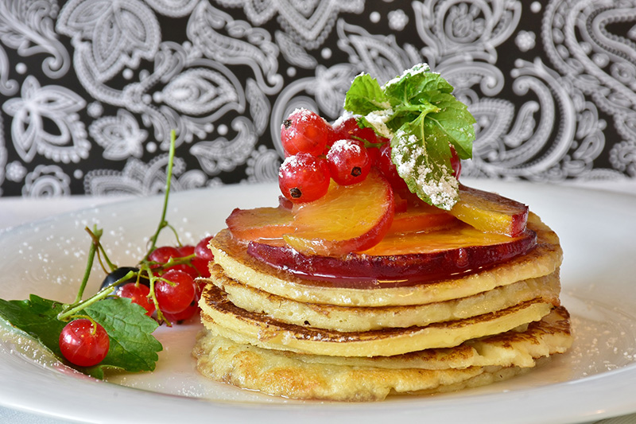
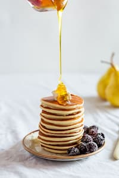
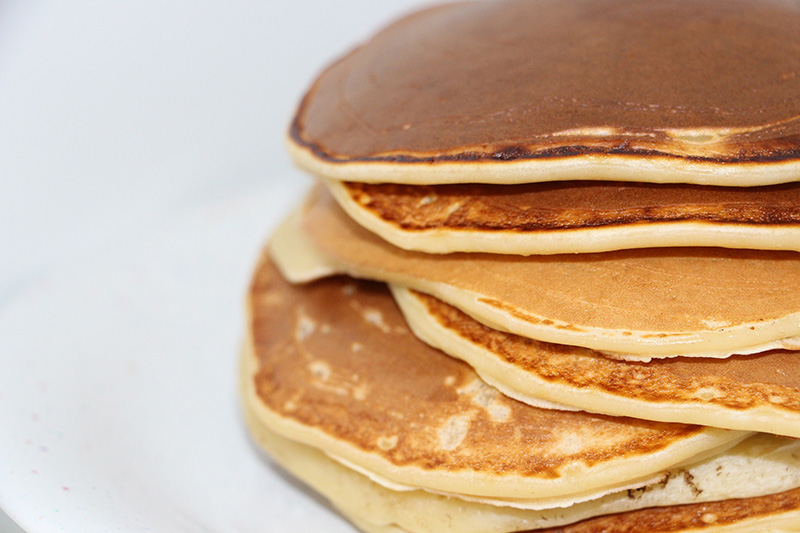
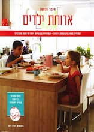

מתכון לפנקייקים שילדים אוהבים!

רכיבים
1 כוס קמח
2 כפות סוכר
קורט מלח
2 כפות שמן
1 כוס חלב
2 כפיות אבקת אפיה
2 כפיות תמצית וניל
1 ביצה
שלבי ההכנה
מערבבים את כל החומרים היבשים בתוך קערה
יוצרים גומה ולתוכה מוסיפים את החלב ביצה טרופה והשמן
בוחשים בעזרת כף עץ עד שאין גושים, ממתינים 5 דקות
יוצקים את התערובת באמצעות מצקת קטנה או כף למחבת טפלון משומנת. לשמן קלות מדי פעם. לטגן על אש בינונית כ- דקה מכל צד. בתאבון
בתאבון!!


ספר מתכונים חדש במחיר מבצע-כל הקודם זוכה!
100 מתכונים שילדים אוהבים
לרכישה